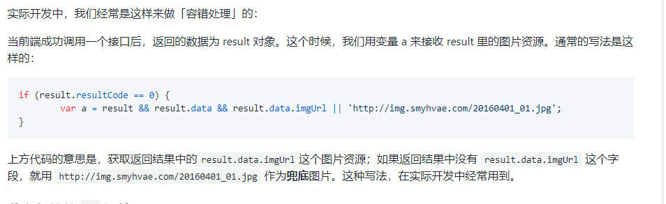
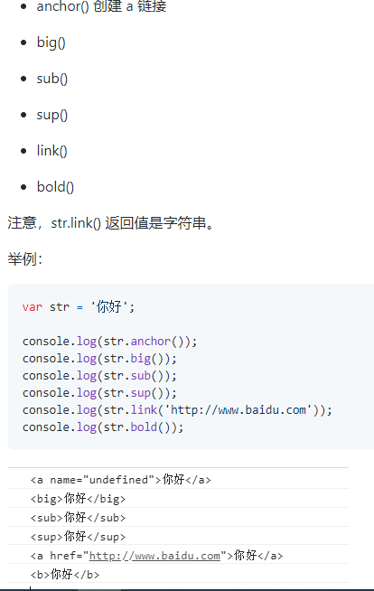

编程语言
编程：让计算机为解决某个问题而使用某种程序设计语言编写程序代码，并最终得到结果的过程。
计算机程序：就是计算机所执行的一系列的指令集合，而程序全部都是用我们所掌握的语言来编写的，所以人们如果要控制计算机，则需要通过计算机语言向计算机发出命令。
计算机语言的种类非常的多，总的来说可以分成三大类：机器语言、汇编语言和高级语言。
计算机最终所执行的都是机器语言，它是由“0”和“1”组成的二进制数，二进制是计算机语言的基础。
通过类似于人类语言的 ”语言”来控制计算机，让计算机为我们做事情，这样的语言就叫做编程语言。不同的编程语言，有不同的语法，必须遵守。
如今通用的编程语言有两种形式：汇编语言和高级语言。汇编语言：与机器语言实质是相同的，都是直接对硬件操作，只不过指令采用了英文缩写的标识符，容易识别和记忆。
高级语言：主要是相对于低级语言而言，它并不是特指某一种具体的语言，而是包括了很多编程语言，比如：C语言、C++、Java、C#、PHP、JavaScript、Python、Objective-C、Swift、Go语言等。
高级语言所编写的程序不能直接被计算机识别，必须经过转换才能被执行，为此，我们需要一个编译器。
编译器可以将我们所编写的源代码转换（翻译）为机器语言，这也被称为二进制化
JS简介
web前端有三层
- HTML：从语义的角度，描述页面结构
- CSS：从审美的角度，描述样式（美化页面）
- JavaScript：从交互的角度，描述行为（实现业务逻辑和页面控制）
JavaScript诞生于1995年。布兰登 • 艾奇（Brendan Eich，1961年～），1995年在网景公司，开发了JavaScript语言.1995年12月与SUN公司合作，因市场宣传需要，改名为
JavaScript。后来 Sun 公司 被Oracle收购，JavaScript版权归Oracle所有。JavaScript是世界上用的最多的脚本语言。
JavaScript介绍
- JavaScript是弱变量类型的语言，变量只需要用 var/let/const 来声明。而Java中变量的声明，要根据变量的类型来定义。
- avaScript是前端语言，而不是后台语言。JavaScript运行在用户的终端网页上，而不是服务器上，所以我们称之为“前端语言”。备注：Node.js是用 JavaScript 开发的，现在也可以基于
Node.js 技术进行服务器端编程。
- JavaScript基础分为三个部分：ECMAScript：JavaScript 的语法标准。包括变量、表达式、运算符、函数、if语句、for语句等。DOM：Document Object
Model（文档对象模型），操作页面上的元素的API。比如让盒子移动、变色、改变大小、轮播图等等。BOM：Browser Object
Model（浏览器对象模型），操作浏览器部分功能的API。通过BOM可以操作浏览器窗口，比如弹框、控制浏览器跳转、获取浏览器分辨率等等。通俗理解就是：ECMAScript 是 JS 的语法；DOM 和 BOM
浏览器运行环境为 JS提供的API。
- JavaScript
的特点：特点1：解释型语言,不需要事先被翻译为机器码；而是边翻译边执行（翻译一行，执行一行）。但是解释型语言运行较慢也是它的劣势。不过解释型语言中使用了JIT技术，使得运行速度得以改善。特点2：单线程特点3：ECMAScript标准,简单来说，ECMAScript不是一门语言，而是一个标准。ECMAScript
规定了JS的编程语法和基础核心知识，是所有浏览器厂商共同遵守的一套JS语法工业标准。ECMAScript在2015年6月，发布了ECMAScript 6版本（ES6），语言的能力更强（也包含了很多新特性）。
编程语言的分类
程序语言翻译成机器语言的工具，被称为翻译器。由此可见，所谓的“翻译”，指的是翻译成计算机能够执行的指令。翻译器翻译的方式有两种：一种是编译，另一种是解释。两种方式之间的区别在于翻译的时机不同。
- 编译器：在代码执行之前，事前把所有的代码一次性翻译好，生成中间代码文件，然后整体执行。
- 解释器：边翻译，边执行（在代码执行时进行及时翻译，并立即执行）。当编译器以解释的方式运行时，也称之为解释器对应的语言，称之为“编译型语言”、“解释型语言”。
编译型语言优点：运行更快。不足：移植性不好，不跨平台。编译型语言举例：c、c++再比如， java 语言的代码文件是.java后缀，翻译之后的文件是.class后缀。（注意，Java 语言不是严格的 编译型语言)
解释型语言优点：移植性好，跨平台。缺点：运行更慢。解释型语言举例：JavaScript、php、Python。
Java 语言既不是编译型语言，也不是解释型语言。翻译过程：编译：.java代码文件先通过 javac 命令编译成.class文件。执行：.class文件再通过 jvm 虚拟机，解释执行。有了 jvm 的存在，让
java 跨平台了。
引入js代码的方式
- 方式1：行内式,如: <input type="button" value="点我点我" onclick="alert('千古壹号')" />
- 方式2、内嵌式,如：
<script type="text/javascript">
// 在这里写 js 代码
alert('千古壹号的方式2');
console.log('qianguyihao 方式2');
</script>
- 方式3：引入外部的 JS 文件,就是<script src="tool.js"></script>另外，引用外部 JS文件的 script 标签中间不可以再写代码。
JS一些简单的语法规则
- JavaScript对换行、缩进、空格不敏感。每一条语句以分号结尾。
- 所有的符号，都是英语的。比如括号、引号、分号。
- 严格区分大小写。
注释
- HTML 的注释:
- CSS的注释:/* 我是注释 */,注意：CSS只有/* */这种注释，没有//这种注释。而且注释要写在>style<标签里面才算生效
- JavaScript 的注释:单行注释：//;多行注释：/* 多行注释1 */
- 补充：VS Code中，单行注释的快捷键是「Ctrl + /」，多行注释的默认快捷键是「Alt + Shift + A」。
弹框
弹出警告框：alert语句
控制台输出：console.log("")，alert() 主要用来显示消息给用户，console.log() 用来给程序员自己调试用的。
弹出输入框：prompt()语句
变量
“字面量”即常量，是固定值，不可改变。看见什么，它就是什么。字面量有3种：数字;字符串;布尔字面量.字面量都可以直接使用，但是我们一般不会直接使用字面量。
变量：是用于存放数据的容器。我们通过「变量名」获取数据，甚至可以修改数据。变量还可以用来保存字面量。本质：变量是程序在内存中申请的一块用来存放数据的空间。
变量的声明和赋值
在ES6语法之前，统一使用var关键字来声明一个变量。比如var name;
在ES6语法及之后,如果你想定义一个常量，就用 const；如果你想定义一个变量，就用 let。
- 同时声明多个变量时，只需要写一个 var， 多个变量名之间用英文逗号隔开。如:var name = '千古壹号', age = 27, number = 100;
- 变量建议先声明，再使用。
变量的命名规范
- 只能由字母(A-Z、a-z)、数字(0-9)、下划线(_)、美元符( $ )组成
- 不能以数字开头。也就是说，必须以字母(A-Z、a-z)、下划线(_)或者美元符( $ )开头。变量名中不允许出现空格
- 不用使用 JS 语言中保留的「关键字」和「保留字」作为变量名。
- 建议用驼峰命名规则。比如getElementById
- 变量名会区分大小写(javascript 是区分大小写的语言)。
- 变量名长度不能超过255个字符
- 汉语可以作为变量名。但是不建议使用，因为 low。
标识符、关键字、保留字
- 标识符：在JS中所有的可以由我们自主命名的都可以称之为标识符。例如：变量名、函数名、属性名、参数名都是属于标识符。标识符的命名规则和变量的命令规则是一样的。
- 关键字：是指 JS 本身已经使用了的单词，我们不能再用它们充当变量、函数名等标识符。如:undefined,typeof,this
- 保留字：实际上就是预留的“关键字”。意思是现在虽然还不是关键字，但是未来可能会成为关键字，同样不 能使用它们当充当变量名、函数名等标识符。如:transient,debugger,abstract
变量的数据类型
在计算机中，不同的数据所需占用的存储空间不同，为了充分利用存储空间，于是定义了不同的数据类型。
而且，不同的数据类型，寓意也不同。
我们都知道，无论这个变量是字符串类型，还是数字类型，我们都可以直接用 var 去定义它。这是因为：
JavaScript 是一种「弱类型语言」，或者说是一种「动态语言」，这意味着不需要提前声明变量的类型，
在程序运行过程中，类型会自动被确定。
JS 的变量数据类型，是在程序运行的过程中，根据等号右边的值来确定的。而且，变量的数据类型是可以变化的。
JS中一共有六种数据类型
- 基本数据类型（值类型）：String 字符串、Number 数值、Boolean 布尔值、Null 空值、Undefined 未定义
- 引用数据类型（引用类型）：Object 对象。
- 注意：内置对象 Function、Array、Date、RegExp、Error等都是属于 Object 类型。也就是说，除了那五种基本数据类型之外，其他的，都称之为 Object类型。
数据类型之间最大的区别：
- 基本数据类型：参数赋值的时候，传数值
- 引用数据类型：参数赋值的时候，传地址（修改的同一片内存空间）。
栈内存和堆内存
我们首先记住一句话：JS中，所有的变量都是保存在栈内存中的。
- 基本数据类型的值，直接保存在栈内存中。值与值之间是独立存在，修改一个变量不会影响其他的变量。
- 对象是保存到堆内存中的。每创建一个新的对象，就会在堆内存中开辟出一个新的空间；而变量保存了对象的内存地址（对象的引用），保存在栈内存当中。
如果两个变量保存了同一个对象的引用，当一个通过一个变量修改属性时，另一个也会受到影响。
基本数据类型：String 和 Boolean
String 字符串语法:字符串型可以是引号中的任意文本，其语法为：双引号 "" 或者单引号 ''。注意:单引号里可以嵌套双引号；双引号里可以嵌套单引号。
转义字符
- \" 表示 " 双引号
- \' 表示 ' 单引号
- \\ 表示\
- \r 表示回车
- \n 表示换行。n 的意思是 newline。
- \t 表示缩进。t 的意思是 tab。
- \b 表示空格。b 的意思是 blank。
获取字符串的长度
字符串是由若干个字符组成的，这些字符的数量就是字符串的长度。
我们可以通过字符串的 length 属性可以获取整个字符串的长度。
- 一个中文算一个字符，一个英文算一个字符
- 一个标点符号（包括中文标点、英文标点）算一个字符
- 一个空格算一个字符
- 多个字符串之间可以使用加号 + 进行拼接,拼接前，会把与字符串相加的这个数据类型转成字符串，然后再拼接成一个新的字符串。
- 字符串里面的值不可被改变。虽然看上去可以改变内容，但其实是地址变了，内存中新开辟了一个内存空间。
- ES6中引入了模板字面量，让我们省去了字符串拼接的烦恼。
如：let name = 'qianguyihao';
console.log(`我是${name}`); // 打印结果：我是 qianguyihao
布尔值：Boolean
布尔型有两个值：true 和 false。主要用来做逻辑判断： true 表示真，false 表示假。布尔值直接使用就可以了，千万不要加上引号。
布尔型和数字型相加时， true 按 1 来算 ，false 按 0 来算。
基本数据类型：Number
在JS中所有的数值都是 Number 类型，包括整数和浮点数（小数）,再次补充：在 JS 中，只要是数，就是 Number 数值型的。无论整浮、浮点数（即小数）、无论大小、无论正负，都是 Number 类型的。
数值范围
由于内存的限制，ECMAScript 并不能保存世界上所有的数值。如果使用 Number 表示的变量超过了最大值，则会返回Infinity。
- 最大值：Number.MAX_VALUE，这个值为： 1.7976931348623157e+308
- 最小值：Number.MIN_VALUE，这个值为： 5e-324
- 无穷大（正无穷）：Infinity
- 无穷小（负无穷）：-Infinity
注意：typeof Infinity的返回结果是number。
NaN
NaN：是一个特殊的数字，表示Not a Number，非数值。如:console.log("abc" / 18);结果是NaN.typeof NaN的返回结果是
number。Undefined和任何数值计算的结果为 NaN。NaN 与任何值都不相等，包括 NaN 本身。
隐式转换
我们知道，"2"+1得到的结果其实是字符串，但是"2"-1得到的结果却是数值1，这是因为计算机自动帮我们进行了“隐式转换”。
也就是说，-、*、/、%这几个符号会自动进行隐式转换。
浮点数的运算
在JS中，整数的运算基本可以保证精确；但是小数的运算，可能会得到一个不精确的结果。所以，千万不要使用JS进行对精确度要求比较高的运算。
这是因为，计算机在做运算时，所有的运算都要转换成二进制去计算。然而，有些数字转换成二进制之后，无法精确表示。比如说，0.1和0.2转换成二进制之后，是无穷的，因此存在浮点数的计算不精确的问题。
那么我们如何处理小数的运算呢?如果只是一些简单的精度问题，可以使用 toFix() 方法进行小数的截取。在实战开发中，关于浮点数计算的精度问题，往往比较复杂。市面上有很多针对数学运算的开源库，比如decimal.js、
Math.js。这些开源库都比较成熟，我们可以直接拿来用。
变量值的传递（赋值）
将等号右边的值，赋给左边的变量；等号右边的变量，值不变。
基本数据类型：Null 和 Undefined
基本数据类型：Null
null 专门用来定义一个空对象（例如：let a = null）。如果你想定义一个变量用来保存引用类型，但是还没想好放什么内容，这个时候，可以在初始化时将其设置为 null。
Null 类型的值只有一个，就是 null。比如 let a = null。使用 typeof 检查一个 null 值时，会返回 object。
Undefined
声明了一个变量，但没有赋值，此时它的值就是 undefined。Undefined 类型的值只有一个，就是 undefind。比如 let a = undefined。
使用 typeof 检查一个 undefined 值时，会返回 undefined。
如果你从未声明一个变量，就去使用它，则会报错（这个大家都知道）；此时，如果用 typeof 检查这个变量时，会返回 undefined。
如果一个函数没有返回值，那么，这个函数的返回值就是 undefined。
调用函数时，如果没有传参，那么，这个参数的值就是 undefined。
Null 和 Undefined的区别
null 和 undefined 有很大的相似性。看看 null == undefined 的结果为 true 也更加能说明这点。
但是 null === undefined 的结果是 false。
任何数据类型和 undefined 运算都是 NaN;
任何值和 null 运算，null 可看做 0 运算。
typeof和数据类型转换
变量的数据类型转换：将一种数据类型转换为另外一种数据类型。
通常有三种形式的类型转换：
typeof 运算符
typeof()表示“获取变量的数据类型”，返回的是小写。
typeof null的返回值也是 object 呢？因为 null 代表的是空对象。
typeof NaN的返回值是 number，上一篇文章中讲过，NaN 是一个特殊的数字
变量的类型转换的分类
类型转换分为两种：显示类型转换、隐式类型转换
显示类型转换
toString()
String()
Number()
parseInt(string)
parseFloat(string)
Boolean()
隐式类型转换
isNaN ()
自增/自减运算符：++、—-
正号/负号：+a、-a
加号：+
运算符：-、*、/
隐式类型转换（特殊）
逻辑运算符：&&、||、！ 。非布尔值进行与或运算时，会先将其转换为布尔值，然后再运算，但运算结果是原值。
关系运算符：<、> <= >=等。关系运算符，得到的运算结果都是布尔值：要么是true，要么是false。
其他的简单类型 --> String
- 方法一（隐式类型转换）：字符串拼接
- 调用 toString()方法,注意：null 和 undefined 这两个值没有 toString()方法
- 方法三（强制转换）：使用 String()函数,我们在 JS 基础的第 01 篇里，就讲过，prompt()就是专门用来弹出能够让用户输入的对话框。重要的是：用户不管输入什么，都当字符串处理。
其他的数据类型 --> Number 【重要】
- 使用 Number() 函数，只要字符串中包含了非数字的内容（小数点按数字来算），则转换为 NaN；如果字符串是一个空串或者是一个全是空格的字符串，则转换为 0。
- 使用 parseInt()函数：字符串 -> 整数
Number() 函数和 parseInt() 函数的区别：Number(true) ：千方百计地想转换为数字。parseInt(true)/parseFloat(true)
：先转为字符串，再提取出最前面的数字部分；没提取出来，那就返回 NaN。
自动带有截断小数的功能：取整，不四舍五入
parseFloat()函数：字符串 --> 浮点数（小数）
parseFloat()的作用是：将字符串转换为浮点数。parseFloat()和 parseInt()的作用类似，不同的是，parseFloat()可以获得有效的小数部分。
转换为 Boolean
其他的数据类型都可以转换为 Boolean类型。情况如下：
情况一：数字 --> 布尔。除了 0 和 NaN，其余的都是 true。也就是说，Boolean(NaN)的结果是 false。
情况二：字符串 ---> 布尔。除了空串，其余的都是 true。全是空格的字符串，转换结果也是 true。字符串'0'的转换结果也是 true。
情况三：null 和 undefined 都会转换为 false。
情况四：引用数据类型会转换为 true。注意，空数组[]和空对象{}，转换结果也是 true，这个一点，很多人都不知道。
隐式转换为 Boolean 类型
当非 Boolean 类型的数值和 Boolean类型的数值做比较时，会先把前者进行隐式转换为 Boolean类型，然后再做比较。
显式转换为 Boolean 类型
方法1：使用 !!可以显式转换为 Boolean 类型。比如 !!3的结果是true。
方法2：使用 Boolean()函数可以显式转换为 Boolean 类型。
其他进制的数字
16 进制的数字，以0x开头
8 进制的数字，以0开头
2 进制的数字，0b开头（不是所有的浏览器都支持：chrome 和火狐支持，IE 不支持）
比如070这个字符串，如果我调用 parseInt()转成数字时，有些浏览器会当成 8 进制解析，有些会当成 10 进制解析。
所以，比较建议的做法是：可以在 parseInt()中传递第二个参数，来指定当前数字的进制。例如：
var a = "070";
a = parseInt(a, 8); //将 070 当成八进制来看待，转换结果为十进制。
console.log(a); // 打印结果：56。这个地方要好好理解。
隐式类型转换
重点：隐式类型转换，内部调用的都是显式类型的方法。
isNaN() 函数,语法：isNaN(参数);隐式类型转换，解释：判断指定的参数是否为NaN（非数字类型），返回结果为 Boolean 类型。也就是说：任何不能被转换为数值的参数,都会让这个函数返回 true。
实际先显示调用了Number(参数)函数，然后将Number(参数)的返回结果和NaN进行比较。
自增/自减运算符：++、—-也是先调用Number(参数)函数，然后将Number(参数)的返回结果进行 加 1 操作。
正号/负号：+a、-a，注意，这里说的是正号/负号，不是加号/减号。任何值做+a、-a、/a运算时，运算结果都会自动转换为 Number 类型。 内部调用的是 Number() 函数
加号：+，情况一：字符串 + 数字会调用 String() 函数将数字转为字符串，然后再计算。导致最终的运算结果是字符串。
情况二：Boolean + 数字：Boolean 型和数字型相加时， true 按 1 来算 ，false 按 0 来算。这里其实是先调 Number() 函数，将 Boolean 类型转换为 Number类型，然后再和
数字相加。
情况三： null + 数字：等价于：0 + 数字
情况四： undefined + 数字：计算结果：NaN
运算符：-、*、/。
任何非 Number 类型的值做-、*、/运算时，会将这些值转换为Number然后再运算(内部调用的是 Number() 函数），运算结果是 Number 类型。
任何的值和字符串做加法运算，都会先转换为字符串，然后再做拼串操作。
任何值和NaN做运算的结果都是NaN。
运算符
运算符：也叫操作符，是一种符号。通过运算符可以对一个或多个值进行运算，并获取运算结果。
表达式：由数字、运算符、变量的组合（组成的式子）。表达式最终都会有一个运算结果，我们将这个结果称为表达式的返回值。
比如：+、*、/、( 都是运算符，而（3+5）/2则是表达式。
JS 中的运算符，分类如下：
- 算数运算符
- 自增/自减运算符
- 一元运算符
- 逻辑运算符
- 赋值运算符
- 比较运算符
- 三元运算符（条件运算符）
算术运算符
算术运算符：用于执行两个变量或值的算术运算。常见的算数运算符有：加，减，乘除及求余
求余举例:345得到5的方法?345 除以10，余数就是5。即：345 % 10
算数运算符的运算规则
- 先算乘除、后算加减。
- 先算乘除、后算加减。
- 先算乘除、后算加减。
浮点数值的最高精度是 17 位小数，但在进行算术计算时，会丢失精度，导致计算不够准确。因此，不要直接判断两个浮点数是否相等。
举例:console.log(0.1 + 0.2); // 运算结果不是 0.3，而是 0.30000000000000004
自增和自减
自增分成两种：a++和++a。一个变量自增以后，原变量的值会立即自增1。也就是说，无论是 a++ 还是++a，都会立即使原变量的值自增1。
我们要注意的是：a是变量，而a++和++a是表达式。
a++和++a的区别
a++这个表达式的值等于原变量的值（a自增前的值）。你可以这样理解：先把 a 的值赋值给表达式，然后 a 再自增。
++a这个表达式的值等于新值 （a自增后的值）。 你可以这样理解：a 先自增，然后再把自增后的值赋值给表达式。
自减 --,原理同上.开发时，大多使用后置的自增/自减，并且代码独占一行，例如：num++，或者 num--。
一元运算符
一元运算符，只需要一个操作数。typeof就是典型的一元运算符，因为后面只跟一个操作数。
正号 +,正号不会对数字产生任何影响。比如说，2和+2是一样的。我们可以对一个其他的数据类型使用+，来将其转换为number【重要的小技巧】。比如：
负号 -,负号可以对数字进行取反。
逻辑运算符
逻辑运算符有三个：注意：能参与逻辑运算的，都是布尔值。
- && 与（且）：两个都为真，结果才为真。
- || 或：只要有一个是真，结果就是真。
- ! 非：对一个布尔值进行取反。
非布尔值的与或运算【重要】
之所以重要，是因为在实际开发中，我们经常用这种代码做容错处理或者兜底处理。
非布尔值进行与或运算时，会先将其转换为布尔值，然后再运算，但返回结果是原值。比如说
与运算的返回结果：（以多个非布尔值的运算为例,以首个false为返回）
- 如果第一个值为false，则执行第一条语句，并直接返回第一个值；不会再往后执行。
- 如果第一个值为true，则继续执行第二条语句，并返回第二个值（如果所有的值都为true，则返回的是最后一个值）。
或运算的返回结果：（以多个非布尔值的运算为例，以首个true为返回）
- 如果第一个值为true，则执行第一条语句，并直接返回第一个值；不会再往后执行。
- 如果第一个值为false，则继续执行第二条语句，并返回第二个值（（如果所有的值都为false，则返回的是最后一个值）。
实际开发中,兜底处理举例

赋值运算符
可以将符号右侧的值赋值给符号左侧的变量。
= 直接赋值。比如 var a = 5
+=。a += 5 等价于 a = a + 5
-=。a -= 5 等价于 a = a - 5
*=。a *= 5 等价于 a = a * 5
/=。a /= 5 等价于 a = a / 5
%=。a %= 5 等价于 a = a % 5
比较运算符
比较运算符可以比较两个值之间的大小关系，如果关系成立它会返回true，如果关系不成立则返回false。
比较运算符，得到的结果都是布尔值：要么是true，要么是false。
- > 大于号
- < 小于号
- >= 大于或等于
-
<= 小于或等于
- == 等于
- === 全等于
- != 不等于
- !== 不全等于
非数值的比较
- 对于非数值进行比较时，会将其转换为数字然后再比较。
- 特殊情况：如果符号两侧的值都是字符串时，不会将其转换为数字进行比较。比较两个字符串时，比较的是字符串的Unicode编码。
因此：当我们在比较两个字符串型的数字时，一定一定要先转型再比较大小，比如 parseInt()
- 何值和NaN做任何比较都是false
==符号的强调
- 注意==这个符号，它是判断是否等于，而不是赋值。（1）== 这个符号，还可以验证字符串是否相同.
- == 这个符号并不严谨，会做隐式转换，将不同的数据类型，转为相同类型进行比较（大部分情况下，都是转换为数字）
- undefined 衍生自 null，所以这两个值做相等判断时，会返回true
- NaN不和任何值相等，包括他本身
===全等符号的强调
- 全等在比较时，不会做类型转换。如果要保证绝对等于（完全等于），我们就要用三个等号===。
- ==的反面是!=，===的反面是!==
三元运算符
三元运算符也叫条件运算符。
语法：条件表达式 ? 语句1 : 语句2;如果条件的表达式的求值结果是一个非布尔值，会将其转换为布尔值然后再运算。
Unicode 编码
- 在字符串中可以使用转义字符输入Unicode编码。格式如下：\u四位编码
- 我们还可以在 HTML 网页中使用Unicode编码。格式如下：&#四位编码;
流程控制语句：选择结构（if和switch）
代码块
用{}包围起来的代码，就是代码块。在 ES5 语法中，代码块，只具有分组的作用，没有其他的用途。代码块中的内容，在外部是完全可见的。
流程控制语句分类
- 顺序结构
- 选择结构：if 语句、switch 语句
- 循环结构：while 语句、for 语句
顺序结构
按照代码的先后顺序，依次执行。
if 语句
条件成立才执行。如果条件不成立，那就什么都不做。
switch 语句（条件分支语句）
解释：switch 可以理解为“开关、转换” 。case 可以理解为“案例、选项”
switch 后面的括号里可以是表达式或者值， 通常是一个变量.JS 是属于弱类型语言，case 后面的值1、值2可以是 'a'、6、true 等任意数据类型的值，也可以是表达式。注意，在这里，字符串'6'和 数字 6
是不一样的。
流程控制语句：循环结构（for和while）
循环语句：通过循环语句可以反复的执行一段代码多次。
break 和 continue
break
- break 可以用来退出 switch 语句或退出整个循环语句（循环语句包括 for 循环、while 循环。不包括 if。if 里不能用 break 和 continue，否则会报错）。
- break 会立即终止离它最近的那个循环语句。
- 可以为循环语句创建一个 label，来标识当前的循环（格式：label:循环语句）。使用 break 语句时，可以在 break 后跟着一个 label，这样 break 将会结束指定的循环，而不是最近的。
continue
- continue 可以用来跳过当次循环，继续下一次循环。
- 同样，continue 默认只会离他最近的循环起作用。
- 同样，如果需要跳过指定的当次循环，可以使用 label 标签。
对象简介
面向对象简介
面向对象：可以创建自定义的类型，很好的支持继承和多态。面向对象的特征：封装、继承、多态。
对象的概念
在 JavaScript 中，对象是一组无序的相关属性和方法的集合。对象的作用是：封装信息。比如Student类里可以封装学生的姓名、年龄、成绩等。
对象具有特征（属性）和行为（方法）。
对象里面的属性均是键值对：键：相当于属性名。值：相当于属性值，可以是任意类型的值（数字类型、字符串类型、布尔类型，函数类型等）。
对象的属性值可以是任何的数据类型，也可以是个函数：（也称之为方法）
对象中的属性值，也可以是一个对象。
对象和数据类型之间的关系
基本数据类型（值类型）：String 字符串、Number 数值、Boolean 布尔值、Null 空值、Undefined 未定义。
引用数据类型（引用类型）：Object 对象。
基本数据类型： 基本数据类型的值直接保存在栈内存中，值与值之间是独立存在，修改一个变量不会影响其他的变量。
只要不是那五种基本数据类型，就全都是对象。对象属于一种复合的数据类型，在对象中可以保存多个不同数据类型的属性。
对象是保存到堆内存中的，每创建一个新的对象，就会在堆内存中开辟出一个新的空间。变量保存的是对象的内存地址（对象的引用）。
换而言之，对象的值是保存在堆内存中的，而对象的引用（即变量）是保存在栈内存中的。
如果两个变量保存的是同一个对象引用，当一个通过一个变量修改属性时，另一个也会受到影响。
对于引用类型的数据，赋值相当于地址拷贝，a、b指向了同一个堆内存地址。所以改了b，a也会变；本质上a、b就是一个东西。
如果你打算把引用类型 A 的值赋值给 B，让A和B相互不受影响的话，可以通过 Object.assign() 来复制对象。效果如下：
对象的分类
1.内置对象：由ES标准中定义的对象，在任何的ES的实现中都可以使用.比如：Object、Math、Date、String、Array、Number、Boolean、Function等。
2.宿主对象：由JS的运行环境提供的对象，目前来讲主要指由浏览器提供的对象。比如 BOM DOM。比如console、document。
3.自定义对象：由开发人员自己创建的对象。通过 new 关键字创建出来的对象实例，都是属于对象类型，比如Object、Array、Date等。
基本包装类型
基本数据类型不能绑定属性和方法。属性和方法只能添加给对象，不能添加给基本数据类型。注意，基本数据类型string是无法绑定属性和方法的。
当然，我们可以打印 str.length、str.indexOf("m")等等。因为这两个方法的底层做了数据类型转换（临时将 string 字符串转换为 String
对象，然后再调用内置方法），也就是我们在上一段中讲到的包装类。
引用数据类型String是可以绑定属性和方法的。
内置对象Number 也有一些自带的方法，比如：
- Number.MAX_VALUE;
- Number.MIN_VALUE;
内置对象 Boolean 也有一些自带的方法，但是用的不多。
基本包装类型
JS为我们提供了三个基本包装类型：
- String()：将基本数据类型字符串，转换为 String 对象。
- Number()：将基本数据类型的数字，转换为 Number 对象。
- Number()：将基本数据类型的数字，转换为 Number 对象。
通过上面这这三个包装类，我们可以将基本数据类型的数据转换为对象。
当我们对一些基本数据类型的值去调用属性和方法时，浏览器会临时使用包装类将基本数据类型转换为引用数据类型，
这样的话，基本数据类型就有了属性和方法，然后再调用对象的属性和方法；调用完以后，再将其转换为基本数据类型。
在底层，字符串以字符数组的形式保存
上方代码中，smyhvae这个字符串在底层是以["s", "m", "y", "h", "v", "a", "e"]的形式保存的。因此，我们既可以获取字符串的长度，也可以获取指定索引 index
位置的单个字符。这很像数组中的操作。
再比如，String 对象的很多内置方法，也可以直接给字符串用。此时，也是临时将字符串转换为 String 对象，然后再调用内置方法。
内置对象 String：字符串的常见方法
内置对象简介
JavaScript 中的对象分为3种：自定义对象 、内置对象、 浏览器对象。前面两种对象：是JS的基础内容，属于 ECMAScript； 第三个浏览器对象：属于JS独有，即 JS 内置的API。
内置对象：就是指这个语言自带的一些对象，供开发者使用，这些对象提供了一些常用或者最基本而必要的功能（属性和方法）。
内置对象最大的优点就是帮助我们快速开发。
js中的内置对象
|
| 内置对象 |
内置对象说明 |
| Arguments |
函数参数集合 |
| Array |
数组 |
| Boolean |
布尔对象 |
| Math |
数学对象 |
| Date |
日期时间 |
| Error |
异常对象 |
| Function |
函数构造器 |
|
|
| Number |
数值对象 |
| Object |
基础对象 |
| RegExp |
正则表达式对象 |
| String |
字符串对象 |
需要注意的是：字符串的所有方法，都不会改变原字符串（字符串的不可变性），操作完成后会返回一个新的值。
- indexOf()/lastIndexOf()：获取字符串中指定内容的索引,如果获取的索引值为 0，说明字符串是以查询的参数为开头的.如果获取的索引值为-1，说明这个字符串中没有指定的内容。
- search()：获取字符串中指定内容的索引（参数里一般是正则）
- includes()：字符串中是否包含指定的内容
- startsWith()：字符串是否以指定的内容开头
- endsWith()：字符串是否以指定的内容结尾
- charAt(index)：获取指定位置的字符
- str[index]str.charAt(index)和str[index]的效果是一样的，不再赘述。区别在于：str[index]是 H5 标准里新增的特性。
- charCodeAt(index)：返回字符串指定位置的字符的 Unicode 编码。不会修改原字符串，通过这个方法，我们可以判断用户按下了哪个按键。如果Unicode编码在0-127说明是英文
- slice():从字符串中截取指定的内容。不会修改原字符串，而是将及截取到的内容返回。包左不包右(包前不包后)
- substring()：解释：从字符串中截取指定的内容。和slice()类似。
- substr():语法:字符串 = str.substr(开始索引, 截取的长度);从字符串中截取指定的内容。不会修改原字符串，而是将及截取到的内容返回
- String.fromCharCode()：根据字符的 Unicode 编码获取字符。举例:console.log(result2); // 打印结果：中
- concat()：解释：字符串的连接。这种方法基本不用，直接把两个字符串相加就好。
- split()：字符串转换为数组 【重要】
- replace():语法:新的字符串 = str.replace(被替换的字符，新的字符);注意：这个方法，默认只会替换第一个被匹配到的字符。如果要全局替换，需要使用正则。
- repeat()：重复字符串,相当于字符串的拼接
- trim()：去除字符串前后的空白。注意只是前后，不包括中间部分
- str.toLowerCase()，转换成小写
- str.toUpperCase()，转换成大写
html 方法

内置对象：Number和Math
内置对象 Number 的常见方法
- Number.isInteger() 判断是否为整数
- toFixed() 小数点后面保留多少位（四舍五入）注意，返回结果是字符串。
Math 和其他的对象不同，它不是一个构造函数，不需要创建对象。所以我们不需要 通过 new 来调用，而是直接使用里面的属性和方法即可。
Math属于一个工具类，里面封装了数学运算相关的属性和方法。
| 内置对象 Math 的常见方法 |
| 方法 |
描述 |
备注 |
| Math.PI |
圆周率 |
Math对象的属性 |
| Math.abs() |
返回绝对值 |
|
| Math.random() |
生成0-1之间的随机浮点数 |
取值范围是 [0，1) |
| Math.floor() |
向下取整（往小取值） |
|
| Math.ceil() |
向上取整（往大取值） |
|
| Math.round() |
四舍五入取整（正数四舍五入，负数五舍六入） |
|
| Math.max(x, y, z) |
返回多个数中的最大值 |
|
| Math.min(x, y, z) |
返回多个数中的最小值 |
|
| Math.pow(x,y) |
乘方：返回 x 的 y 次幂 |
|
| Math.sqrt() |
开方：对一个数进行开方运算 |
|
- 生成 [0, x) 之间的随机数:Math.round(Math.random()*x)
- 生成 [x, y) 之间的随机数: Math.round(Math.random()*(y-x)+x)
- 【重要】生成 [x, y]之间的随机整数:Math.floor(Math.random() * (max - min + 1)) + min;
url 编码和解码:URI (Uniform ResourceIdentifiers,通用资源标识符)进行编码，
以便发送给浏览器。有效的URI中不能包含某些字符，例如空格。而这URI编码方法就可以对URI进行编码，
它们用特殊的UTF-8编码替换所有无效的字符，从而让浏览器能够接受和理解。
内置对象：Date
内置对象 Date 用来处理日期和时间。需要注意的是：与 Math 对象不同，Date 对象是一个构造函数 ，需要先实例化后才能使用。
创建Date对象有两种写法：写法一：如果Date()不写参数，就返回当前时间对象。也可以理解成是：获取当前代码执行的时间。
结果格式为:Mon Feb 17 2020 21:57:22 GMT+0800 (中国标准时间);写法二：传递参数,传递参数时，表示获取指定时间的时间对象。参数中既可以传递字符串，也可以传递数字，也可以传递时间戳。
|
| 方法名 |
含义 |
备注 |
| getFullYear() |
获取年份 |
|
| getMonth() |
获取月： 0-11 |
0代表一月 |
| getDate() |
获取日：1-31 |
获取的是几号 |
| getDay() |
获取星期：0-6 |
0代表周日，1代表周一 |
| getHours() |
获取小时：0-23 |
|
| getMinutes() |
获取分钟：0-59 |
|
| getSeconds() |
获取秒：0-59 |
|
| getMilliseconds() |
获取毫秒 |
1s = 1000ms |
获取时间戳
时间戳：指的是从格林威治标准时间的1970年1月1日，0时0分0秒到当前日期所花费的毫秒数（1秒 = 1000毫秒）。
计算机底层在保存时间时，使用的都是时间戳。时间戳的存在，就是为了统一时间的单位。
我们经常会利用时间戳来计算时间，因为它更精确。而且，在实战开发中，接口返回给前端的日期数据，都是以时间戳的形式。
format()将时间对象转换为指定格式。
数组简介
数组（Array）是属于内置对象，我们可以在MDN网站上查询它的各种方法。数组和普通对象的功能类似，也是用来存储一些值的。不同的是：
普通对象是使用字符串作为属性名的，而数组是使用数字作为索引来操作元素。索引：从 0 开始的整数就是索引。数组的存储性能比普通对象要好。在实际开发中我们经常使用数组来存储一些数据（尤其是列表数据），使用频率非常高。
数组中的元素可以是任意的数据类型，也可以是对象，也可以是函数，也可以是数组。数组的元素中，如果存放的是数组，我们就称这种数组为二维数组。
创建数组的方式:
- 方式一：使用字面量创建数组,举例：var arr2 = [1, 2, 3]; // 创建带初始值的数组
- 方式二：使用构造函数创建数组，举例:let arr = new Array(参数);如果参数为空，则表示创建一个空数组；如果参数是一个数值时，表示数组的长度；如果有多个参数时，表示数组中的元素。
数组的基本操作
数组的索引:索引 (下标) ：用来访问数组元素的序号，代表的是数组中的元素在数组中的位置（下标从 0 开始算起）。
向数组中添加元素:语法:数组[索引] = 值;
获取数组的长度:可以使用length属性来获取数组的长度(即“元素的个数”)。
修改数组的长度（修改 length）:如果修改的 length 大于原长度，则多出部分会空出来，置为 null。如果修改的 length 小于原长度，则多出的元素会被删除，数组将从后面删除元素。（特例：伪数组
arguments 的长度可以修改，但是不能修改里面的元素，后面单独讲。）
遍历: 就是把数组中的每个元素从头到尾都访问一次。最简单的做法是通过 for 循环，遍历数组中的每一项。
数组的常见方法
| 数组的方法清单 |
| 方法 |
描述 |
| Array.isArray() |
判断是否为数组 |
| toString() |
将数组转换为字符串 |
| Array.from(arrayLike) |
将伪数组或可遍历对象转换为真数组 |
| Array.of(value1, value2, value3) |
创建数组：将一系列值转换成数组 |
| 数组元素的添加和删除 |
| 方法 |
描述 |
备注 |
| Apush() |
向数组的最后面插入一个或多个元素，返回结果为新数组的长度 |
会改变原数组 |
| pop() |
删除数组中的最后一个元素，返回结果为被删除的元素 |
会改变原数组 |
| unshift() |
在数组最前面插入一个或多个元素，返回结果为新数组的长度 |
会改变原数组 |
| shift() |
删除数组中的第一个元素，返回结果为被删除的元素 |
会改变原数组 |
| slice() |
从数组中提取指定的一个或多个元素，返回结果为新的数组 |
不会改变原数组 |
| splice() |
从数组中删除指定的一个或多个元素，返回结果为被删除元素组成的新数组 |
会改变原数组 |
| fill() |
填充数组：用固定的值填充数组，返回结果为新的数组 |
不会改变原数组 |
| 数组的合并和拆分 |
| 方法 |
描述 |
备注 |
| concat() |
合并数组：连接两个或多个数组，返回结果为新的数组 |
不会改变原数组 |
| join() |
将数组转换为字符串，返回结果为转换后的字符串 |
不会改变原数组 |
| split() |
将字符串按照指定的分隔符，组装为数组 |
不会改变原字符串,注意，split()是字符串的方法，不是数组的方法。 |
| 数组排序 |
| 方法 |
描述 |
备注 |
| reverse() |
反转数组，返回结果为反转后的数组 |
会改变原数组 |
| sort() |
对数组的元素,默认按照Unicode 编码，从小到大进行排序 |
会改变原数组 |
| 查找数组的元素 |
| 方法 |
描述 |
备注 |
| indexOf(value) |
从前往后索引，检索一个数组中是否含有指定的元素 |
|
| lastIndexOf(value) |
从后往前索引，检索一个数组中是否含有指定的元素 |
|
| find(function()) |
找出第一个满足「指定条件返回 true」的元素 |
|
| findIndex(function()) |
找出第一个满足「指定条件返回 true」的元素的 index |
|
| every() |
确保数组中的每个元素都满足「指定条件返回 true」，则停止遍历，此方法才返回 true |
全真才为真。要求每一项都返回 true，最终的结果才返回 true |
| some() |
数组中只要有一个元素满足「指定条件返回 true」，则停止遍历，此方法就返回 true |
一真即真。只要有一项返回 true，最终的结果就返回 true |
| 遍历数组 |
| 方法 |
描述 |
备注 |
| for 循环 |
依次遍历 |
|
| forEach() |
和 for 循环类似，但需要兼容 IE8 以上 |
forEach() 没有返回值。也就是说，它的返回值是 undefined |
| map() |
对原数组中的每一项进行加工，将组成新的数组 |
不会改变原数组 |
| filter() |
过滤数组：返回结果是 true 的项，将组成新的数组，返回结果为新的数组 |
不会改变原数组 |
| reduce |
接收一个函数作为累加器，返回值是回调函数累计处理的结果 |
|
Array.from()
作用：将伪数组或可遍历对象转换为真数组。
slice()
语法:slice()：从数组中提取指定的一个或者多个元素，返回结果为新的数组（不会改变原来的数组）。
新数组 = 原数组.slice(开始位置的索引, 结束位置的索引); //注意：包含开始索引，不包含结束索引,不加参数时，则获取所有的元素。
// 如果只有一个参数，就从那个值开始提取，直到末尾
//如果是一个负值,比如-2,则提取最后两个元素
//如果第一个参数大于第二个参数，则获取集合为空
splice()
fill()
fill()：用一个固定值填充数组，返回结果为新的数组。不会改变原数组。语法：新数组 = 数组.fill(固定值);// 用一个固定值填充数组。数组里的每个元素都会被这个固定值填充
sort()方法
sort() 方法时不带参，则默认按照Unicode 编码，从小到大进行排序。如果数组的元素是数字，那么排序后不会按数字大小排序，而是Unicode编码
find()方法
every()方法
forEach() 遍历
reduce()方法
reduce 的发音：[rɪ'djuːs]。中文含义是减少，但这个方法跟“减少”没有任何关系。
reduce() 方法接收一个函数作为累加器，数组中的每个值（从左到右）开始缩减，最终计算为一个值。返回值是回调函数累计处理的结果。
语法：
arr.reduce(function (previousValue, currentValue, currentIndex, arr) {}, initialValue);
参数解释：
- previousValue：必填，上一次调用回调函数时的返回值
- currentValue：必填，当前正在处理的数组元素
- currentIndex：选填，当前正在处理的数组元素下标
- arr：选填，调用 reduce()方法的数组
- initialValue：选填，可选的初始值（作为第一次调用回调函数时传给 previousValue 的值）
18-函数
函数：就是将一些功能或语句进行封装，在需要的时候，通过调用的形式，执行这些语句。
函数的介绍
- 函数也是一个对象
- 使用typeof检查一个函数对象时，会返回function
函数的作用：
- 将大量重复的语句抽取出来，写在函数里，以后需要这些语句的时候，可以直接调用函数，避免重复劳动
- 简化编程，让编程模块化。高内聚、低耦合。
函数的定义/声明
- 利用函数关键字自定义函数（命名函数）,使用函数声明来创建一个函数（也就是 function 关键字）
- 方式二：函数表达式（匿名函数）,使用函数表达式来创建一个函数。语法var 变量名 = function([形参1,形参2...形参N]){：语句....},所谓的“函数表达式”，其实就是将匿名函数赋值给一个变量。
- 方式三：使用构造函数 new Function(),使用构造函数new Function()来创建一个对象。语法:var 变量名/函数名 = new Function('形参1', '形参2', '函数体');
注意，Function 里面的参数都必须是字符串格式。也就是说，形参也必须放在字符串里；函数体也是放在字符串里包裹起来，放在 Function 的最后一个参数的位置。
- 总结:所有的函数，都是 Fuction 的“实例”（或者说是“实例对象”）。函数本质上都是通过 new Function 得到的。函数既然是实例对象，那么，函数也属于“对象”。
函数的调用
- 方式1：普通函数的调用,函数调用的语法：函数名();或者函数名.call();
- 方式2：通过对象的方法来调用
- 方式3：立即执行函数
- 方式4：通过构造函数来调用
- 方式5：绑定事件函数
- 方式6：定时器函数
函数的参数：形参和实参
- 实参的类型: 函数的实参可以是任意的数据类型。调用函数时，解析器不会检查实参的类型，所以要注意，是否有可能会接收到非法的参数，如果有可能则需要对参数进行类型的检查。
-
调用函数时，解析器也不会检查实参的数量。
实参的数量（实参和形参的个数不匹配时）:如果实参的数量多余形参的数量，多余实参不会被赋值。
如果实参的数量少于形参的数量，多余的形参会被定义为 undefined。表达式的运行结果为 NaN。
注意：在 JS 中，形参的默认值是 undefined。
函数的返回值
- eturn 的作用是结束方法（终止函数）。
- return 的值将会作为函数的执行结果返回，可以定义一个变量，来接收该结果。
- 在函数中，return后的语句都不会执行（函数在执行完 return 语句之后停止并立即退出函数）
- 如果return语句后不跟任何值，就相当于返回一个undefined
- 如果函数中不写return，则也会返回undefined
- 返回值可以是任意的数据类型，可以是对象，也可以是函数。
- return 只能返回一个值。如果用逗号隔开多个值，则以最后一个为准。
函数名、函数体和函数加载问题（重要，请记住）
我们知道，当我们在调用一个函数时，通常使用函数()这种格式；可如果，我们是直接使用函数这种格式，它的作用相当于整个函数。函数的加载问题：JS加载的时候，只加载函数名，不加载函数体。所以如果想使用内部的成员变量，需要调用函数。
fn() 和 fn 的区别【重要】
- fn()：调用函数。调用之后，还获取了函数的返回值。
- fn：函数对象。相当于直接获取了整个函数对象。
break、continue、return 的区别
- break ：结束当前的循环体（如 for、while）
- continue ：跳出本次循环，继续执行下次循环（如 for、while）
- return ：1、退出循环。2、返回 return 语句中的值，同时结束当前的函数体内的代码，退出当前函数。
立即执行函数
方法
- 函数也可以成为对象的属性。如果一个函数是作为一个对象的属性保存，那么，我们称这个函数是这个对象的方法。调用这个函数就说调用对象的方法（method）。函数和方法，有什么本质的区别吗？它只是名称上的区别，并没有其他的区别。
我们可以这样说，如果直接是fn()，那就说明是函数调用。如果是XX.fn()的这种形式，那就说明是方法调用
arguments 的使用
当我们不确定有多少个参数传递的时候，可以用 arguments 来获取。在 JavaScript 中，arguments 实际上是当前函数的一个内置对象。所有函数都内置了一个 arguments 对象（只有函数才有
arguments 对象），arguments 对象中存储了传递的所有实参.
arguments的展示形式是一个伪数组。伪数组具有以下特点：
- 可以进行遍历；具有数组的 length 属性。
- 按索引方式存储数据。
- 不具有数组的 push()、pop() 等方法。
19-作用域和变量提升
通俗来讲，作用域是一个变量或函数的作用范围。作用域在函数定义时，就已经确定了。目的：为了提高程序的可靠性，同时减少命名冲突。
在 JS 中，一共有两种作用域：（ES6 之前）
- 全局作用域：作用于整个 script 标签内部，或者作用域一个独立的 JS 文件。
- 函数作用域（局部作用域）：作用于函数内的代码环境。
在内部作用域中可以访问到外部作用域的变量，在外部作用域中无法访问到内部作用域的变量。
根据作用域的不同，变量可以分为两类：全局变量、布局变量。
全局变量：
- 在全局作用域下声明的变量，叫「全局变量」。在全局作用域的任何一地方，都可以访问这个变量。
- 在全局作用域下，使用 var 声明的变量是全局变量。
- 特殊情况：在函数内不使用 var 声明的变量也是全局变量（不建议这么用）。
局部变量：
- 定义在函数作用域的变量，叫「局部变量」。
- 在函数内部，使用 var 声明的变量是局部变量。
- 函数的形参也是属于局部变量。
从执行效率来看全局变量和局部变量：
- 全局变量：只有浏览器关闭时才会被销毁，比较占内存。
- 局部变量：当其所在的代码块运行结束后，就会被销毁，比较节约内存空间。
作用域的上下级关系
当在函数作用域操作一个变量时，它会先在自身作用域中寻找，如果有就直接使用（就近原则）。如果没有则向上一级作用域中寻找，
直到找到全局作用域；如果全局作用域中依然没有找到，则会报错 ReferenceError。
在函数中要访问全局变量可以使用window对象。（比如说，全局作用域和函数作用域都定义了变量a，如果想访问全局变量，可以使用window.a）
全局作用域
直接编写在script标签中的JS代码，都在全局作用域。
全局作用域在页面打开时创建，在页面关闭时销毁
在全局作用域中有一个全局对象window，它代表的是一个浏览器的窗口，由浏览器创建，我们可以直接使用。
在全局作用域中：创建的变量都会作为window对象的属性保存。比如在全局作用域内写 var a = 100，这里的 a 等价于 window.a。
在全局作用域中：创建的函数都会作为window对象的方法保存。
变量的声明提前（变量提升）
使用var关键字声明的变量（ 比如 var a = 1），会在所有的代码执行之前被声明（但是不会赋值），但是如果声明变量时不是用var关键字（比如直接写a = 1），则变量不会被声明提前。
既然JS中存在变量提升的现象，那么，在实战开发中，为了避免出错，建议先声明一个变量，然后再使用这个变量。
函数的声明提前
函数声明：使用函数声明的形式创建的函数function foo(){}，会被声明提前。也就是说，整个函数会在所有的代码执行之前就被创建完成。所以，在代码顺序里，我们可以先调用函数，再定义函数。
使用函数表达式创建的函数var foo = function(){}，不会被声明提前，所以不能在声明前调用。
很好理解，因为此时foo被声明了（这里只是变量声明），且为undefined，并没有把 function(){} 赋值给 foo。
函数作用域
在函数作用域中，也有声明提前的特性：函数中，使用var关键字声明的变量，会在函数中所有的代码执行之前被声明。函数中，没有var声明的变量都是全局变量，而且并不会提前声明。
定义形参就相当于在函数作用域中声明了变量。
JavaScript 没有块级作用域（ES6之前）
在其他编程语言中（如 Java、C#等），存在块级作用域，由{}包括起来。比如在 Java 语言中，if 语句里创建的变量，只能在if语句内部使用.但是，在 JS 中没有块级作用域（ES6之前）。
作用域链
只要是代码，就至少有一个作用域
写在函数内部的局部作用域
如果函数中还有函数，那么在这个作用域中就又可以诞生一个作用域
作用域链：内部函数访问外部函数的变量，采用的是链式查找的方式来决定取哪个值，这种结构称之为作用域链。查找时，采用的是就近原则。
20-预编译
JavaScript 运行三部曲
- 语法分析
- 预编译
- 解释执行
预编译前奏
- 规律1：任何变量，如果未经声明就赋值，此变量是属于 window 的属性，而且不会做变量提升。（注意，无论在哪个作用域内赋值）
- 规律2：一切声明的全局变量，全是window的属性。由此，我们可以看出：window 代表了全局作用域（是说「代表」，没说「等于」）。
预编译
函数预编译的步骤:函数预编译，发生在函数执行的前一刻。
- 创建AO对象。AO即 Activation Object 活跃对象，其实就是「执行期上下文」。
- 找形参和变量声明，将形参名和变量作为 AO 的属性名，值为undefined。
- 将实参值和形参统一，实参的值赋给形参。
- 查找函数声明，函数名作为 AO 对象的属性名，值为整个函数体。
21-执行期上下文
当函数执行时（准确来说，是在函数发生预编译的前一刻），会创建一个执行期上下文的内部对象。一个执行期上下文定义了一个函数执行时的环境。
每调用一次函数，就会创建一个新的上下文对象，他们之间是相互独立且独一无二的。当函数执行完毕，它所产生的执行期上下文会被销毁。
22-this
解析器在调用函数每次都会向函数内部传递进一个隐含的参数，这个隐含的参数就是this，this指向的是一个对象，这个对象我们称为函数执行的 上下文对象。
根据函数的调用方式的不同，this会指向不同的对象：【重要】
- 1.以函数的形式调用时，this永远都是window。比如fun();相当于window.fun();
- 2.以方法的形式调用时，this是调用方法的那个对象
- 3.以构造函数的形式调用时，this是新创建的那个对象
- 4.使用call和apply调用时，this是指定的那个对象
- 5.ES6中的箭头函数并不会使用上面四条标准的绑定规则，而是会继承外层函数调用的this绑定（无论this绑定到什么）。
类数组 arguments
在调用函数时，浏览器每次都会传递进两个隐含的参数：
- 1.函数的上下文对象 this
- 2.封装实参的对象 arguments,arguments是一个类数组对象，它可以通过索引来操作数据，也可以获取长度
arguments代表的是实参。在调用函数时，我们所传递的实参都会在arguments中保存。有个讲究的地方是：arguments只在函数中使用。
arguments
- 1、返回函数实参的个数：arguments.length。arguments.length可以用来获取实参的长度。
- 2.返回正在执行的函数：arguments.callee。arguments里边有一个属性叫做callee，这个属性对应一个函数对象，就是当前正在指向的函数对象。
- 3.arguments可以修改元素。之所以说arguments是伪数组，是因为：arguments可以修改元素，但不能改变数组的长短。
对象的创建&构造函数
创建自定义对象的几种方法
- 方式一：对象字面量。对象的字面量就是一个{}。里面的属性和方法均是键值对。对象字面量的属性名可以加引号也可以不加，建议不加。如果要使用一些特殊的名字，则必须加引号。
键和值之间使用:连接,对象的最后一个属性不要写,。
- 方式二：工厂模式。通过该方法可以大批量的创建对象。弊端:使用工厂方法创建的对象，使用的构造函数都是Object。所以创建的对象都是Object这个类型，就导致我们无法区分出多种不同类型的对象。
- 方式三：利用构造函数
构造函数
构造函数：是一种特殊的函数，主要用来创建和初始化对象，也就是为对象的成员变量赋初始值。它与 new 一起使用才有意义。
我们可以把对象中一些公共的属性和方法抽取出来，然后封装到这个构造函数里面。
构造函数和普通函数的区别
构造函数的创建方式和普通函数没有区别，不同的是构造函数习惯上首字母大写。构造函数和普通函数的区别就是调用方式的不同：普通函数是直接调用，而构造函数需要使用new关键字来调用。
this的指向也有所不同
- 1.以函数的形式调用时，this永远都是window。比如fun();相当于window.fun();
- 2.以方法的形式调用时，this是调用方法的那个对象
- 3.以构造函数的形式调用时，this是新创建的实例对象
new 一个构造函数的执行流程
- 开辟内存空间，在内存中创建一个新的空对象。
- 让 this 指向这个新的对象。
- 执行构造函数里面的代码，给这个新对象添加属性和方法。
- 返回这个新对象（所以构造函数里面不需要return）。
类、实例
使用同一个构造函数创建的对象，我们称为一类对象，也将一个构造函数称为一个类。通过一个构造函数创建的对象，称为该类的实例。使用 instanceof 可以检查一个对象是否为一个类的实例。
others
json的介绍:对象字面量和json比较像。JSON：JavaScript Object Notation（JavaScript对象表示形式）。
JSON和对象字面量的区别：JSON的属性必须用双引号引号引起来，对象字面量可以省略。
注：json里一般放常量、数组、对象等，但很少放function。
对象和json没有长度，json.length的打印结果是undefined。于是乎，自然也就不能用for循环遍历（因为遍历时需要获取长度length）。
json 采用 for...in...进行遍历，和数组的遍历方式不同。如下：
对象的基本操作
使用 new 关键字调用的函数，是构造函数 constructor。构造函数是专门用来创建对象的函数。使用typeof检查一个对象时，会返回object。
向对象中添加属性
- 向对象添加属性的语法：对象.属性名 = 属性值;
获取对象中的属性
- 方式 1：语法：对象.属性名;
- 方式 2：可以使用[]这种形式去操作属性,语法格式如下：（读取时，也是采用这种方式）对象['属性名'] = 属性值;// 注意，括号里的属性名，必须要加引号。
重要：使用[]这种形式去操作属性，更加的灵活，因为，我们可以在[]中直接传递一个变量。
修改对象的属性值
- 语法:对象.属性名 = 新值;
删除对象的属性
- 语法:delete obj.name;
in 运算符,通过该运算符可以检查一个对象中是否含有指定的属性。如果有则返回 true，没有则返回 false。
- 语法:'属性名' in 对象;等同于if (obj.name)
遍历对象的属性名：for in。主要用于遍历对象，不建议用来遍历数组。
- 语法：for (const 变量 in 对象名) {}。解释：对象中有几个属性，循环体就会执行几次。每次执行时，会将对象中的每个属性的 属性名 赋值给变量。
25-对象的高级操作：Object.assign()
Object.assgin()的作用是:把 对象 obj1 复制给 obj2（两者之间互不影响）
Object.freeze() 冻结对象,Object.freeze() 方法可以冻结一个对象。
一个被冻结的对象再也不能被修改；冻结了一个对象则不能向这个对象添加新的属性，
不能删除已有属性，不能修改该对象已有属性的可枚举性、可配置性、可写性，以及不能修改已有属性的值。
此外，冻结一个对象后该对象的原型也不能被修改。freeze() 返回和传入的参数相同的对象。
31-正则表达式
正则表达式用于定义一些字符串的规则。计算机可以根据正则表达式，来检查一个字符串是否符合指定的规则；或者将字符串中符合规则的内容提取出来。
创建正则表达式的对象
- 方式一：使用构造函数创建正则表达式的对象。
- 方式二：使用字面量创建正则表达式
传两个参数时：匹配模式 【重要】
- i 忽略大小写。这里的 i 指的是 ignore。
- g 全局匹配模式。这里的 g 指的是 global。
- 正则表达式的test()方法
以上两种方式的对比
- 方式一：使用构造函数创建时，更加灵活，因为参数中还可以传递变量。
- 方式二：使用字面量的方式创建，更加简单。
全局匹配和非全局匹配的区别
- 对于非全局匹配的正则表达式，test()只会检测是否存在某个目标字符串（只要存在就为 true），多次检测的结果都相同。
- 当设置全局标志 /g 时，一旦字符串中还存在匹配，test() 方法都将返回 true，同时匹配成功后将把 lastIndex 属性的值设置为上次匹配成功结果之后的第一个字符所在的位置，下次匹配将从 lastIndex 指示的位置开始；
匹配不成功时返回 false，同时将 lastIndex 属性的值重置为 0。
正则表达式的简单语法
检查一个字符串中是否包含 a或b
- 写法1： var reg = /a|b/;解释：使用 | 表示或的意思。
- 写法2:var reg = /[ab]/;解释：这里的[]也是表示或的意思。
[]表示：或
- /[ab]/ 等价于 /a|b/：检查一个字符串中是否包含 a或b
- /[a-z]/：检查一个字符串那种是否包含任意小写字母
- /[A-Z]/：任意大写字母
- /[A-z]/：任意字母
- /[0-9]/：任意数字
- /a[bde]c/：检查一个字符串中是否包含 abc 或 adc 或 aec
[^ ] 表示：除了
支持正则表达式的 String 对象的方法
split(),将一个字符串拆分成一个数组。可以接受一个正则表达式作为参数。
search(),搜索字符串中是否含有指定内容。如果搜索到指定内容，则会返回第一次出现的索引；否则返回-1。serach()只会查找第一个，即使设置全局匹配也没用。
match(),根据正则表达式，从一个字符串中将符合条件的内容提取出来，封装到一个数组中返回（即使只查询到一个结果）。注意：默认情况下，match()方法只会找到第一个符合要求的内容，找到以后就停止检索。我们可以设置正则表达式为全局匹配模式，这样就会匹配到所有的内容，并以数组的形式返回。
replace()，将字符串中的指定内容，替换为新的内容并返回。不会修改原字符串。语法：新的字符串 = str.replace(被替换的内容，新的内容);
被替换的内容：可以接受一个正则表达式作为参数。
新的内容：默认只会替换第一个。如果需要替换全部符合条件的内容，可以设置正则表达式为全局匹配模式。
39-事件简介
事件：就是文档或浏览器窗口中发生的一些特定的交互瞬间。JavaScript 是以事件驱动为核心的一门语言。JavaScript 与 HTML 之间的交互是通过事件实现的。
事件的三要素：事件源、事件、事件驱动程序。
- 事件源：引发后续事件的html标签。
- 事件：js已经定义好了（见下图）。
- 事件驱动程序：对样式和html的操作。也就是DOM。
获取事件源的方式（DOM节点的获取）
- var div1 = document.getElementById("box1");//方式一：通过id获取单个标签
- var arr1 = document.getElementsByTagName("div");//方式二：通过 标签名 获得 标签数组，所以有s
- var arr2 = document.getElementsByClassName("hehe"); //方式三：通过 类名 获得 标签数组，所以有s
绑定事件的方式
- 方式一：直接绑定匿名函数
- 方式二：先单独定义函数，再绑定,绑定的时候，是写fn，不是写fn()。fn代表的是整个函数，而fn()代表的是返回值。
- 方式三：行内绑定,是写的"fn()"，不是写的"fn"。因为绑定的这段代码不是写在js代码里的，而是被识别成了字符串。
onload事件,当页面加载（文本和图片）完毕的时候，触发onload事件。js的加载是和html同步加载的。因此，如果使用元素在定义元素之前，容易报错。这个时候，onload事件就能派上用场了，我们可以把使用元素的代码放在onload里，就能保证这段代码是最后执行。
40-DOM简介和DOM操作
JavaScript基础分为三个部分：
- ECMAScript：JavaScript的语法标准。包括变量、表达式、运算符、函数、if语句、for语句等。
- DOM：文档对象模型（Document object Model），操作网页上的元素的API。比如让盒子移动、变色、轮播图等。
- BOM：浏览器对象模型（Browser Object Model），操作浏览器部分功能的API。比如让浏览器自动滚动。
节点（Node）：构成 HTML 网页的最基本单元。网页中的每一个部分都可以称为是一个节点，比如：html标签、属性、文本、注释、整个文档等都是一个节点。
节点的类型不同，属性和方法也都不尽相同。所有的节点都是Object。
常见节点分为四类：
- 文档节点（文档）：整个 HTML 文档。整个 HTML 文档就是一个文档节点
- 元素节点（标签）：HTML标签。
- 属性节点（属性）：元素的属性。
- 文本节点（文本）：HTML标签中的文本内容（包括标签之间的空格、换行）。
DOM
DOM：Document Object Model，文档对象模型。DOM 为文档提供了结构化表示，并定义了如何通过脚本来访问文档结构。目的其实就是为了能让js操作html元素而制定的一个规范。
DOM就是由节点组成的.解析过程： HTML加载完毕，渲染引擎会在内存中把HTML文档，生成一个DOM树，getElementById是获取内中DOM上的元素节点。然后操作的时候修改的是该元素的属性。

DOM可以做什么
- 找对象（元素节点）
- 设置元素的属性值
- 设置元素的样式
- 动态创建和删除元素
- 事件的触发响应：事件源、事件、事件的驱动程序
DOM访问关系的获取,节点的访问关系，是以属性的方式存在的。要重点知道parentNode和children这两个属性的用法。
- 获取父节点:调用者就是节点。一个节点只有一个父节点，调用方式就是:节点.parentNode
- 获取下一个节点:下一个兄弟节点 = 节点.nextElementSibling || 节点.nextSibling
- 前一个节点:节点.previousElementSibling || 节点.previousSibling
- 获得任意一个兄弟节点：节点自己.parentNode.children[index]
- 第一个子节点:第一个子元素节点 = 节点.firstElementChild || 节点.firstChild
- 最后一个子节点:最后一个子元素节点 = 节点.lastElementChild || 节点.lastChild
- 获取所有的子节点:子节点数组 = 父节点.childNodes; 或者子节点数组 = 父节点.children; //获取所有节点。用的最多。
节点的访问关系都是属性。节点的操作都是函数（方法）。
DOM节点的操作（重要）
创建节点格式如下：新的标签(元素节点) = document.createElement("标签名");
插入节点方式一:父节点.appendChild(新的子节点);解释：父节点的最后插入一个新的子节点。
插入节点方式二:父节点.insertBefore(新的子节点,作为参考的子节点)。解释:在参考节点前插入一个新的节点。如果参考节点为null，那么他将在父节点里面的最后插入一个子节点。
删除节点格式如下：父节点.removeChild(子节点);解释：用父节点删除子节点。必须要指定是删除哪个子节点。
如果我想删除自己这个节点，可以这么做：node1.parentNode.removeChild(node1);
复制节点（克隆节点）格式如下：要复制的节点.cloneNode(false); 不带参数/带参数false：只复制节点本身，不复制子节点。带参数true：既复制节点本身，也复制其所有的子节点。
设置节点的属性
获取节点的属性值:方式1：元素节点.属性名;或者方式2：设置节点的属性值元素节点.getAttribute("属性名称");方式1和方式2的区别在于：前者是直接操作标签，后者是把标签作为DOM节点。推荐方式2。
设置节点的属性值，同上方式1：元素节点.属性名方式2：元素节点.setAttribute("属性名", "新的属性值");
删除节点的属性：元素节点.removeAttribute(属性名);
DOM对象的属性-补充
innerHTML和innerText的区别
- value：标签的value属性。
- innerHTML：双闭合标签里面的内容（包含标签）。
- innerText：双闭合标签里面的内容（不包含标签）。（老版本的火狐用textContent）
nodeType属性
- nodeType == 1 表示的是元素节点（标签） 。记住：在这里，元素就是标签。
- nodeType == 2 表示是属性节点。
- nodeType == 3 是文本节点。
文档的加载
浏览器在加载一个页面时，是按照自上向下的顺序加载的，读取到一行就运行一行。如果将script标签写到页面的上边，在代码执行时，页面还没有加载，页面没有加载DOM对象也没有加载，会导致无法获取到DOM对象。
onload 事件会在整个页面加载完成之后才触发。为 window 绑定一个onload事件，该事件对应的响应函数将会在页面加载完成之后执行，这样可以确保我们的代码执行时所有的DOM对象已经加载完毕了。